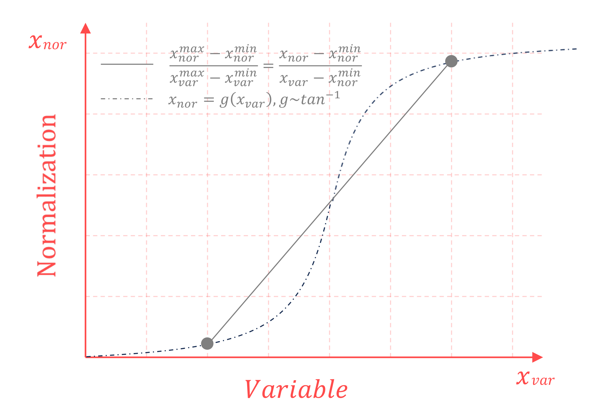
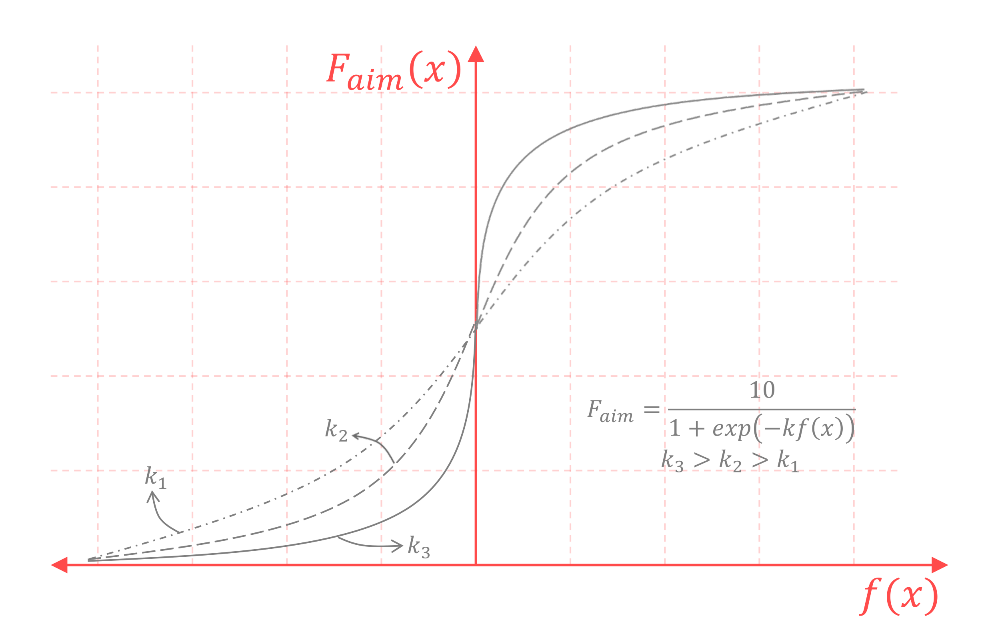
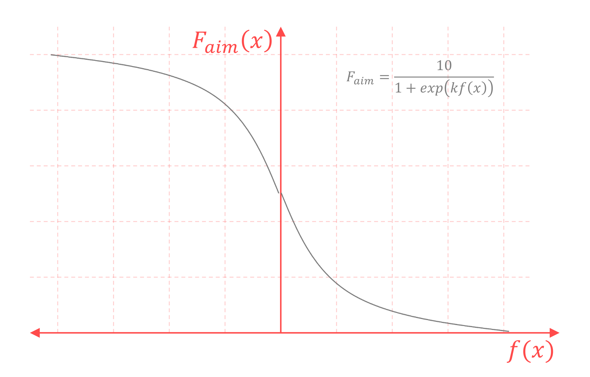
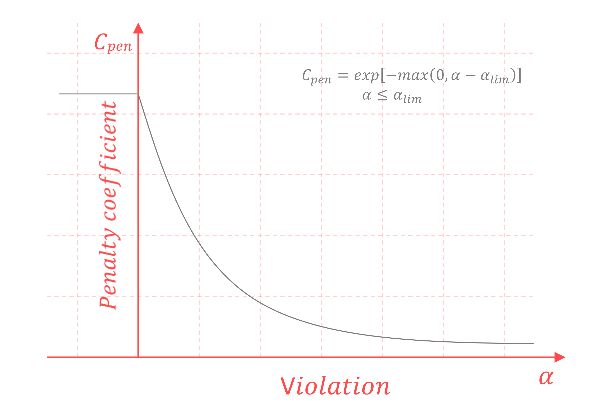
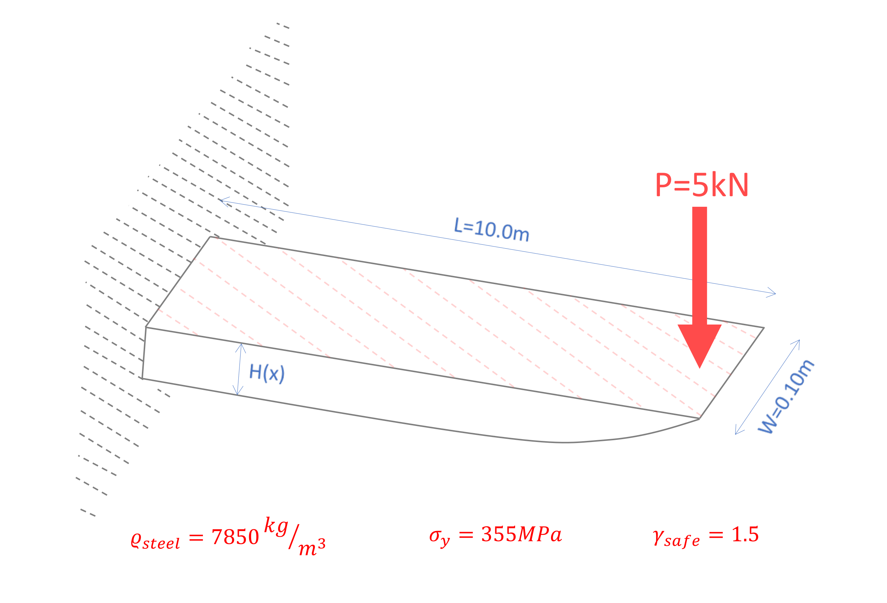

This manual consolidates a set of methodologies, techniques, and practical guidelines aimed at the systematic formulation and solution of numerical optimization problems. In computational environments where convergence stability, repeatability, and result accuracy constitute critical performance criteria, proper problem formulation and appropriate preparation of the input data are as critical as the selection of the optimization algorithm. Within this context, the document outlines key principles and practices that enhance the consistency and efficiency of the overall optimization workflow.
The sections that follow provide a concise and focused overview of the main optimization algorithms: SIMPLEX, BFGS, GENETIC, and ADJOINT, along with practical guidance on key stages of implementation, including the normalization of design variables and objective functions, the incorporation of constraints, and the adjustment of problem parameters to match the numerical requirements of each method. Emphasis is placed on techniques that reduce sensitivity to scaling effects, improve convergence behavior, and ensure reliable performance in realistic applications.
This material has been designed as supporting technical documentation for the optimization modules developed within the Opt4Deck platform. Its purpose is twofold: to provide a unified theoretical foundation for understanding the fundamental characteristics of the available methods, and to offer practical guidance for their proper application. In this respect, the present manual serves as a coherent reference for applying optimization techniques to engineering and computational analysis problems.
2. Optimization Algorithms
The optimization algorithms supported by the Opt4Deck platform are outlined below, together with their key characteristics and typical areas of application.
SIMPLEX: This method represents one of the fundamental approaches in linear programming and is used to solve optimization problems in which a linear objective function is optimized under linear constraints. The method is based on an iterative process that transitions between basic feasible solutions following a structured sequence of steps until the optimal result is reached. Due to its deterministic nature and well-established numerical properties, it remains a standard reference for applications that can be expressed within a linear modeling framework.
BFGS: It is one of the most widely used and effective approaches for unconstrained nonlinear optimization. It belongs to the family of quasi-Newton methods and leverages gradient information together with an iterative approximation of the Hessian matrix, achieving fast convergence without requiring explicit second-order derivatives. It supports both minimization and maximization formulations and demonstrates particularly strong performance for smooth objective functions. When analytical derivatives are not available, numerical gradient estimation may be employed, preserving practical flexibility across a broad range of applications.
Genetic Algorithm: These are stochastic optimization methods inspired by evolutionary principles and natural selection. The process is implemented through a population of candidate solutions, which evolves over successive generations using operators such as selection, crossover, and mutation. Their main strength lies in their ability to perform broad exploration of the search space, making them well suited for complex, nonlinear, or multimodal problems where deterministic methods may become trapped in local extrema. In addition, they do not require derivative information and can be applied to non-smooth or black-box objective functions.
Adjoint Method: This approach is particularly well suited for optimization problems governed by underlying differential equations. Its key advantage is the efficient computation of sensitivities (gradients) of the objective function with respect to a large number of design variables, with computational cost largely independent of the number of variables. This property makes the method highly effective for large-scale applications such as fluid mechanics, structural analysis, and, more generally, PDE-based optimization, where direct gradient evaluation would be prohibitively expensive.
In the table that follows, the critical parameters influencing the selection of the above algorithms are summarized, including the nature of the problem, the presence of constraints, derivative and smoothness requirements, and any dependency on governing equations. The table is intended to provide an immediate, high-level overview, enabling the reader to align the characteristics of each method with the specific requirements of a given application.
Normalization is a fundamental step in the formulation of any numerical optimization problem, as it directly influences algorithmic stability, numerical consistency, and convergence efficiency. In practical applications, both the objective function and the design variables often require appropriate rescaling or transformation so that the problem attains a coherent computational range, consistent numerical behavior, and a well-defined optimization direction. This preprocessing stage mitigates instability phenomena, reduces sensitivity arising from heterogeneous magnitudes or units, and facilitates the reliable numerical operation of optimization algorithms, whether gradient-based or stochastic. This section introduces the conceptual framework and core principles of normalization, establishing general guidelines for properly preparing an optimization problem prior to the application of any algorithm. The specific techniques and mathematical transformations employed for the normalization of the objective function and the design variables are systematically analyzed in the subsequent subsections.

Normalization of design variables.
3.1. Design Variables
Design variables in an optimization problem often exhibit substantial differences in their natural scale, numerical range, or units of measurement. In many practical applications, variables of very small magnitude (e.g., \(10^{-3}\)) may coexist with others that differ by several orders of magnitude (e.g., \(10^3\)), introducing pronounced numerical heterogeneity. Such disparities can adversely affect the behavior of an optimization algorithm, leading to numerical instability, distortion of the search landscape, or significant degradation in convergence performance, particularly in methods that rely on numerically sensitive operations such as gradient evaluation and iterative update schemes.
A widely adopted and effective strategy is to normalize all design variables within a unified and computationally manageable numerical range, typically between \(0\) and \(10\). This process is commonly achieved by associating each variable with an appropriate reference value — such as a nominal, maximum, or allowable quantity — and applying linear or nonlinear transformation functions to obtain a stable and dimensionally consistent representation. For example, in mechanical design applications, a structural thickness may be expressed relative to a reference thickness, while in control problems an input force may be normalized as a fraction of its maximum permissible value. Through this approach, all variables acquire a comparable numerical scale, independent of their physical interpretation or measurement units.
The selection of the transformation function is a critical aspect of the normalization process, as it directly influences the algorithm’s behavior during the optimization search. Simple linear mappings are sufficient when the variable range is well defined and boundary effects do not require special treatment. In cases where the problem exhibits increased sensitivity near the limits of the admissible domain or approaches asymptotic behavior, appropriately designed nonlinear transformations can be employed to smooth or compress the response near the boundaries. Such transformations enhance numerical stability and mitigate undesirable effects during iterative updates.
Overall, the normalization of design variables establishes a numerically consistent representation of the design space, enabling optimization algorithms to operate effectively across variables of disparate scale and physical meaning.
3.2. Objective Function
The normalization of the objective function is a critical step in the formulation of an optimization problem, as it defines how candidate solutions are evaluated and compared. In many applications, the objective function may exhibit large variations in magnitude or be expressed on numerical scales that hinder its direct use across different optimization algorithms. For this reason, it is often desirable to map the objective function onto a predefined and controlled interval — typically between \(0\) and \(10\) — in order to maintain a consistent evaluation scale, regardless of the physical interpretation or magnitude of the original function.
This process requires the identification or reliable estimation of upper and lower bounds of the objective function, enabling the definition of appropriate transformations that keep the function values within a specific numerical range. In addition, such transformations can be used to match the optimization direction to the specifications of the selected algorithm, given that certain methods are formulated exclusively for minimization or maximization. By applying suitable monotonic mappings, a problem can be reformulated to comply with the required search direction without altering the underlying physical model or modifying the algorithmic structure.
Overall, objective function normalization acts as a mechanism for unifying the evaluation process and adapting the problem to the numerical requirements of the chosen method. The diagrams that follow illustrate representative transformation schemes that map the objective function to the desired interval, either preserving or reversing the optimization direction to comply with the requirements of the selected optimization algorithm.

Transformation of an objective function of maximization into a bounded function.

Transformation of a maximization objective function into a minimization function.
4. Constraint Techniques
Constraints are a fundamental component of most optimization problems encountered in practice, as they represent physical, operational, or design limits of the system under consideration. Their effective integration into the optimization process requires methods that ensure feasibility control without compromising search efficiency or numerical reliability. This chapter presents core constraint-handling techniques, ranging from classical theoretical formulations to more directly applicable numerical approaches, providing a coherent framework for selecting and applying appropriate strategies in practical optimization workflows.
4.1. Classical Constrained Optimization
Classical constrained optimization methods describe the fundamental mathematical framework through which constraints are incorporated into an optimization process. The central idea is that a constrained maximization problem can be reformulated into a set of optimality conditions through the introduction of auxiliary variables (multipliers) that represent the influence of each constraint on the final outcome. The two principal formulations of this framework are the Lagrange multiplier method and the Karush–Kuhn–Tucker (KKT) conditions.
The Lagrange multiplier method applies to maximization problems with equality constraints. The multipliers (\(\lambda_i\)) act as coupling parameters between the objective function and the constraints, enabling the identification of points where the optimization objective is compatible with the imposed equalities. In practice, this formulation is primarily used as a compact and structured representation of the necessary optimality conditions for equality-constrained problems.
The Karush–Kuhn–Tucker conditions provide the natural generalization of this framework to problems involving both equality and inequality constraints. A general constrained maximization problem may be expressed as:
max:
\(f(x)\)
s.t.
\(g_i(x)=0,\)
\(i=1,...,m\)
\(h_j(x) \le 0,\)
\(j=1,...,n\)
and the associated Lagrangian function is defined as:
where the multipliers of the inequality constraints satisfy \(\mu_j \ge 0\), together with the complementary slackness conditions. The KKT conditions define the optimality framework for constrained problems and serve as a reference for understanding the behavior of methods that handle inequality constraints.
Direct numerical solution of the Lagrange/KKT conditions is not typically the preferred practical approach, as it involves the solution of nonlinear systems and the reliable identification of active constraint sets. For this reason, the following sections present more applicable numerical techniques that employ the same underlying principles in a form compatible with real-world computational requirements.
4.2. Sequential Quadratic Programming
Sequential Quadratic Programming (SQP) is one of the most established and effective numerical techniques for solving nonlinear constrained optimization problems. Its core principle consists in replacing the original nonlinear problem with a sequence of quadratic programming subproblems, which are solved iteratively and progressively drive the solution toward the optimum.
At each iteration, the problem is locally approximated around the current design point. The objective function is locally represented by a second-order model, using either the exact Hessian of the Lagrangian or suitable approximations (e.g., quasi-Newton updates), while both equality and inequality constraints are linearized through first-order expansions. This procedure results in a quadratic subproblem with linear constraints, serving as a local approximation of the Karush–Kuhn–Tucker optimality conditions of the original problem.
Solving the quadratic subproblem provides the search direction for the design variables, along with estimates of the associated constraint multipliers. The design point is then updated through an appropriate step selection or update scheme, typically combined with line-search or step-control mechanisms to ensure consistent progress and satisfactory constraint enforcement throughout the iterative process.
The iterative solution continues until predefined convergence criteria are met, which commonly include:
the norm of the Lagrangian gradient,
constraint satisfaction within prescribed tolerances, and
the change in the objective function between successive iterations.
A key advantage of SQP is its systematic handling of both equality and inequality constraints without requiring external problem transformations. When accurate derivative information, or reliable approximations, are available, SQP typically exhibits fast and robust convergence, especially in the vicinity of the optimal solution.
Nevertheless, SQP relies on high-quality derivative information and relatively smooth behavior of both the objective function and the constraints. In problems characterized by noise, discontinuities, or purely black-box objective or constraint evaluations, its effectiveness may deteriorate or require careful parameter tuning.
4.3. Penalty-based Handling

Constraint through penalty-based method.
Penalty-based methods provide a practical and flexible approach for incorporating constraints into optimization problems, particularly in cases where simplicity of implementation and independence from the underlying mathematical structure are required. Their core principle consists in modifying the objective function through a penalty coefficient, which directly links the evaluation of a candidate solution to the degree of constraint violation.
In a maximization problem, the original objective function \(F_{aim}\) is transformed into a penalized form \(F_{eff}=F_{aim} \cdot C_{pen}\), where the penalty coefficient \(C_{pen}\) depends on a measure of constraint violation and remains neutral within the admissible region. The effect of the penalty is activated progressively beyond a prescribed threshold, reducing the effective objective value as the violation increases.
The functional form of the penalty term and the strength with which it is applied are user-defined design choices. This approach enables different levels of strictness in constraint enforcement, depending on whether strict feasibility is required or temporary violations are tolerated during the search process. Owing to its simplicity, the penalty-based approach is particularly well suited for general-purpose optimizers, stochastic methods, and black-box problems.
Notes: Practical considerations for implementation.
Avoiding objective function nullification: Fully nullifying the objective function in regions of constraint violation should be avoided, as it removes useful information about the relative quality of infeasible solutions.
Multiple constraints: When multiple constraints are present, the penalty term may be defined either as a function of the sum of individual violations or based on the maximum violation. The appropriate choice depends on whether uniform enforcement or prioritization of the most critical constraint is desired.
Scaling and tuning: The parameters of the penalty function must be consistent with the scale of the objective function, ensuring that the penalty effect is neither excessively dominant nor insufficient to guide the optimization process.
5. Application: Optimal Thickness Distribution of Cantilever
A cantilever beam of length \(L\) subjected to a concentrated tip load \(P\) is considered. The beam is prismatic with respect to its width \(W\), while the cross-section thickness/height varies along the beam x-axis according to a function \(H(x)\). The objective is to minimize the total structural mass under a strength constraint requiring that the maximum normalized bending stress satisfies \(max(|\sigma|)/\sigma_y \le 1\), where \(\sigma_y\) denotes the material yield strength.

Cantilever thickness distribution with static load.
The structural analysis is based on linear Euler–Bernoulli beam theory. For a cantilever under a tip load, the bending moment varies linearly along the span as \(M(x)=P(L-x)\). For a rectangular cross section of width \(W\) and local thickness \(H(x)\), the second moment of area with respect to the neutral axis is given by \(I(x)=\frac{WH(x)^3}{12}\), while the normal bending stress at a point located at distance \(y\) from the neutral axis is given by:
In the present application, stresses are not evaluated only at the outermost fiber but over a discrete set of points obtained from a mesh constructed within the cross section. This approach provides an element-wise stress field and enables a consistent estimation of the maximum value \(max(|\sigma|)\), which governs the strength constraint. In addition, due to the simple analytical relationship of the problem, the ideal thickness distribution \(H^*(x)\), obtained by enforcing a constant limiting stress \(\sigma(x)=\sigma_y\) along the beam, is considered for reference and validation purposes.
The thickness function \(H(x)\) is parameterized using a three-point quadratic Bezier-curve. The control points are defined as \(cp_1=(0,y_1)\), \(cp_2=(x_2,y_2)\) and \(cp_3=(L,y_3^{[1]})\), with the first and last points anchored at the beam ends. This choice ensures a smooth and continuous thickness variation along the beam, while design control is achieved through a limited number of variables. The Bezier-curve is sampled at predefined positions \(x_i\), and at each position a vertical column of nodes is generated, leading to a quadrilateral mesh in the \((x,y)\) plane. The resulting elements are used both for mass calculation and for evaluating the normalized stress distribution.
The optimization procedure is performed using a Genetic Algorithm with fixed-length binary encoding. Each design variable is represented by a 10-bit genome, resulting in a 30-bit chromosome for three variables. The total number of possible combinations is \(2^{30} \simeq 1.07×10^9\), illustrating the size of the search space even for a relatively small number of variables. In this context, the Genetic Algorithm is adopted as an exploration/exploitation strategy for the design space through population selection, crossover, and mutation. The objective function is formulated as a maximization metric that corresponds monotonically to lower-mass solutions, while the strength constraint is enforced through the penalty factor \(C_{pen}=0.5+0.5\exp[-max(0,max(\frac{|\sigma|}{\sigma_y})-1)]\), so that the fitness is progressively reduced for infeasible solutions and remains equal to unity when the constraint is satisfied.
The implementation of the problem is organized into dedicated scripts that implement the analysis and optimization workflow. Specifically, beam.py includes the Bezier-based geometric parameterization, the mesh generation procedure, the mass calculation, and the evaluation of bending stresses. The optimize.py script defines the fitness function, incorporates the penalty coefficient, and executes the optimization using the Opt4Deck optimization framework. Finally, cinema.py is used for post-processing and visualization, generating plots that summarize the optimization results.
Results of the optimization process.
The optimization history typically exhibits a rapid mass reduction during the early generations, followed by a gradual convergence toward an almost constant value. This behavior is reflected in the upper plot, where the mass decreases from large initial values to approximately \(m \simeq 5.8×10^2 kg\) and then fluctuates only slightly, indicating convergence to a near-optimal region. The lower plot shows that the Bezier-based thickness distribution closely matches the ideal profile \(H^*(x)\) over most of the beam length. Deviations are mainly observed near the free end (\(x \rightarrow L\)), where the ideal profile tends to very small thickness values and the Bezier-based solution remains bounded due to the finite parameterization and mesh discretization. The colormap representation of the ratio \(|\sigma|/\sigma_y\) confirms the expected physical behavior: the highest values occur near the clamped end where the bending moment is maximum, while toward the free end the normalized stress decreases as \(M(x)\) approaches zero. Overall, the method produces a reduced-mass design while satisfying the strength constraint and yields a thickness distribution consistent with the theoretical optimal shape, confirming that Bezier parameterization is an effective reduced-order approach for constrained shape optimization of beam-type structures.
6. Conclusions
This manual presented a practical set of techniques and guidelines supporting the proper formulation and solution of optimization problems, ensuring reliable application in realistic computational environments. Through a concise overview of the four core algorithms — SIMPLEX, BFGS, GENETIC, and ADJOINT — the key characteristics and suitability of each method across distinct problem categories were highlighted, facilitating an informed selection based on the requirements of the application.
Special emphasis was given to the importance of normalizing both the design variables and the objective function, as a critical preprocessing step for improving numerical consistency and convergence efficiency. In addition, fundamental constraint-handling techniques were discussed, ranging from classical theoretical formulations (Lagrange and KKT) to more directly applicable numerical approaches, aiming to incorporate physical and design requirements into the optimization process in a controlled and consistent manner.
Finally, through the application example presented, the importance of systematic problem formulation was demonstrated and the practical relevance of the techniques developed in the previous sections was confirmed. The overall approach indicates that the effectiveness of an optimization workflow does not rely solely on the choice of algorithm, but rather on the combined effect of appropriate parameterization, suitable transformations, and reliable constraint handling. Within this framework, the present material may serve as a consistent reference base for the effective application and further utilization of the optimization tools provided by the Opt4Deck platform.
\(^{[1]}\)In the present implementation, the third control point is assigned a small negative offset \((y_3 = -0.005)\), ensuring a strictly positive minimum thickness at the free end to satisfy manufacturing considerations and improve numerical stability.